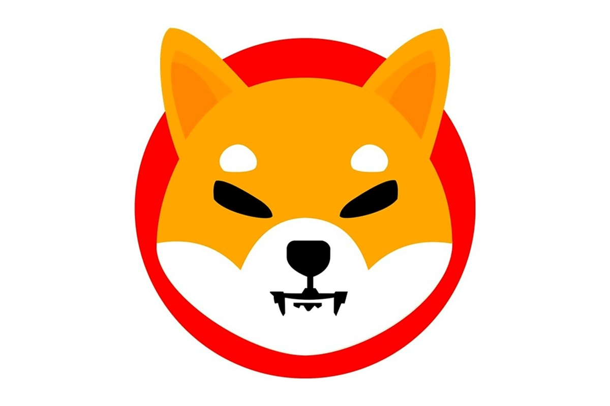
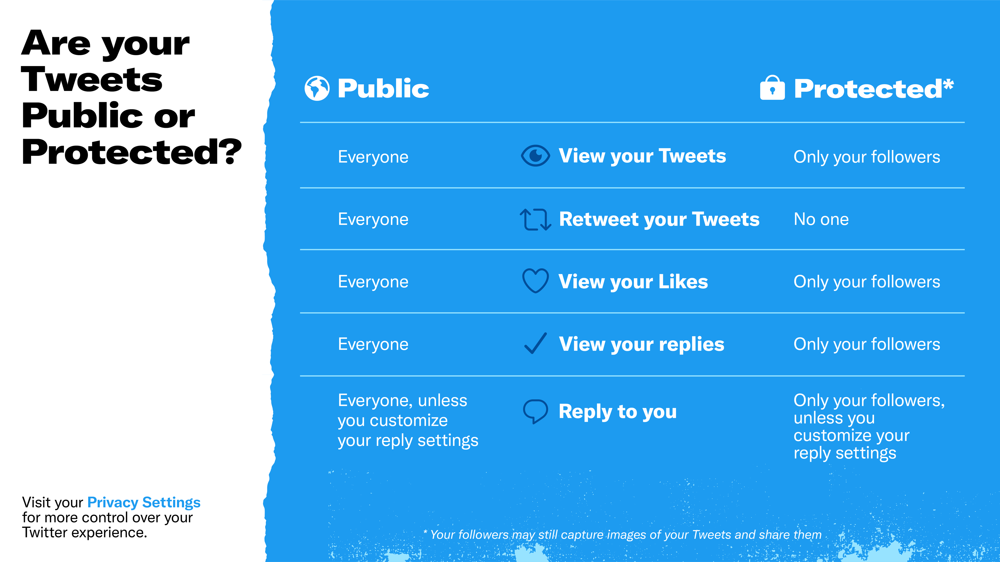

Home
Home
 Explore
Explore
 Notifications
Notifications
 Messages
Messages
 Profile
Profile
 More
More

38m
Isn’t that good idea but how we community trust,you will burn all the money you make from yubetube.??

10d
mine was on mobile, if it says you're in line, just keep refreshing! don't stay on the queue!!! also idk if it helped or not but I had my laptop opened with the same account. even though at one point it said "sold out" I kept refreshing until it said add to cart. best of luck!
15h
One of my favorite things about the "ergonomics" of haskell is
being able to leave underscores in code that isn't finished yet,
and the type checker still works and provides useful information
about the incomplete code. ("holes" --
https://typeclasses.com/typed-holes)
38m
Learn a new language without spending hours and hours memorizing flashcards.
38m
The same song. The same artist. Two different copyright owners. Can you hear the difference?
38m
Privacy is about way more than protecting data.
It’s also about giving you tools to help you create your own Twitter experience & feel safe. Check out the differences between Public and Protected accounts on Twitter so you can choose what feels right for you.

Trends for you
#covid
#AmazonPrimeDay
#autos
Who to follow
.png)